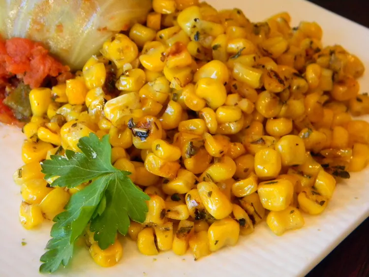

Italian Corn

Ingrediants
- 1 ½ tablespoons butter
- 2 ½ cups whole kernel sweet corn
- 1 tablespoon Italian seasoning
- 1 pinch salt and ground black pepper
Steps
- Heat a skillet over high heat. Heat butter in hot skillet until almost completely melted; stir in corn. Season corn with Italian seasoning, salt, and black pepper. Cook seasoned corn until light golden brown, about 5 minutes.
- Enjoy!!!